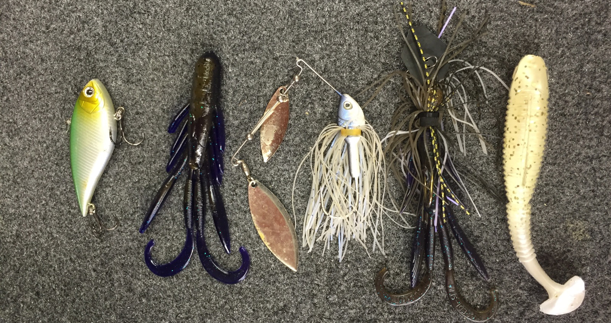

Lures I Use at Reunion Lake

When fishing at Reunion Lake, I like to use a variety of lures depending on the conditions and time. Here are some of my favorites:
- Spinnerbaits - Great for covering water quickly and attracting aggressive bass.
- Plastics - Perfect for finesse fishing around structure and vegetation.
- Crankbaits - Ideal for deeper areas of the lake where bass tend to hang out.
Each lure has its own unique action and can be very effective when used in the right situation.